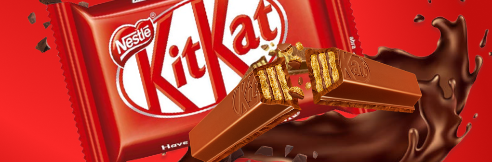

The origins of what is now known as the Kit Kat brand go back to 1911, when Rowntree's, a confectionery company based in York, England, trademarked the terms Kit Cat and Kit Kat. The names were not used immediately and Kit Kat first appeared in the 1920s, when Rowntree's launched a brand of boxed chocolates entitled Kit Cat. This continued into the 1930s, when Rowntree's shifted focus and production onto its Black Magic and Dairy Box brands. With the promotion of alternative products, the Kit Cat brand decreased and was eventually discontinued. The original four-finger bar was developed after a worker at Rowntree's York Factory put a suggestion in a recommendation box for a snack that "a man could take to work in his pack". The bar was officially launched on 29 August 1935, under the title of Rowntree's Chocolate Crisp (priced at 2d), and was sold in London and throughout southern England!

It was originally called Rowntree’s Chocolate Crisp, and the later two-finger version was launched in 1936. It was renamed Kit Kat Chocolate Crisp in 1937 and just Kit Kat after the war. The Kit-Cat Club had met regularly in a tavern in Shire Lane in London, hosted by innkeeper Christopher Catling, known as ‘Kit Cat’ to his friends. Nearly 200 years later, the snappy moniker fitted with agency J Walter Thompson’s attempts to move away from the longer, more literal names used on Rowntree’s other products.
Japan has developed over 200 flavour variants, from banana to soy sauce to, wait for it, European cheese! Their love for the product at least slightly being linked to the fact that the name is very similar to the phrase, “Kitto Katsu“, roughly translating as “surely win.”
Nutritional Information
| Per 1 Bar (45g) | AMOUNT | % DV |
|---|---|---|
| Calories | 230 | |
| Carbohydrate | 29 g | |
| Fibre | 1 g | 4% |
| Sugars | 23 g | 23% |
| Fat | 12 g | 16% |
| Cholesterol | 5 mg | |
| Saturated | 7 g | |
| Trans | 0.1 g | |
| Protein | 3 g | |
| Sodium | 35 mg | 2% |
| Calcium | 50 mg | 4% |
| Iron | 1.5 mg | 8% |
| Potassium | 150 mg | 3% |